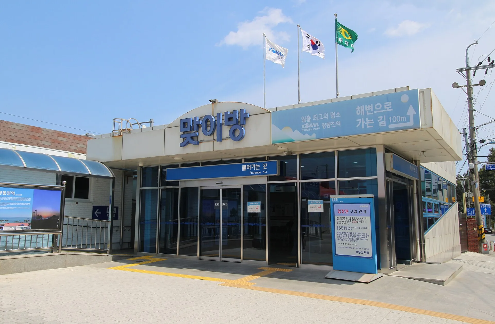
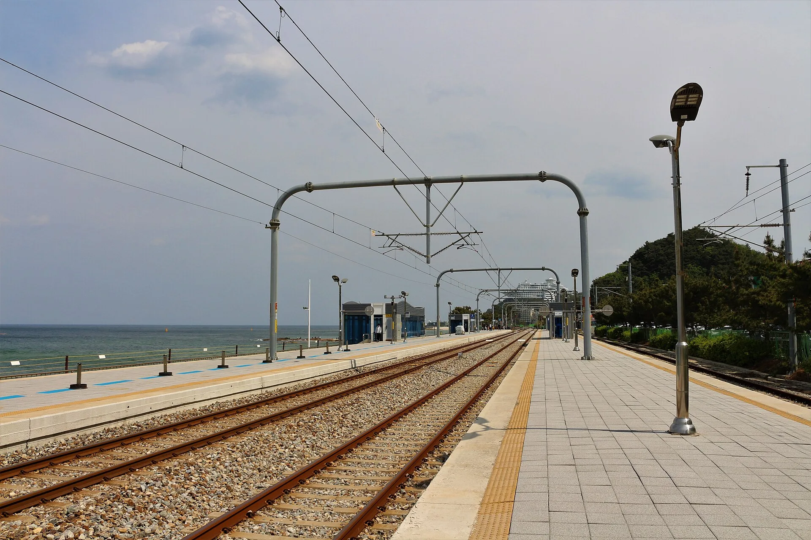
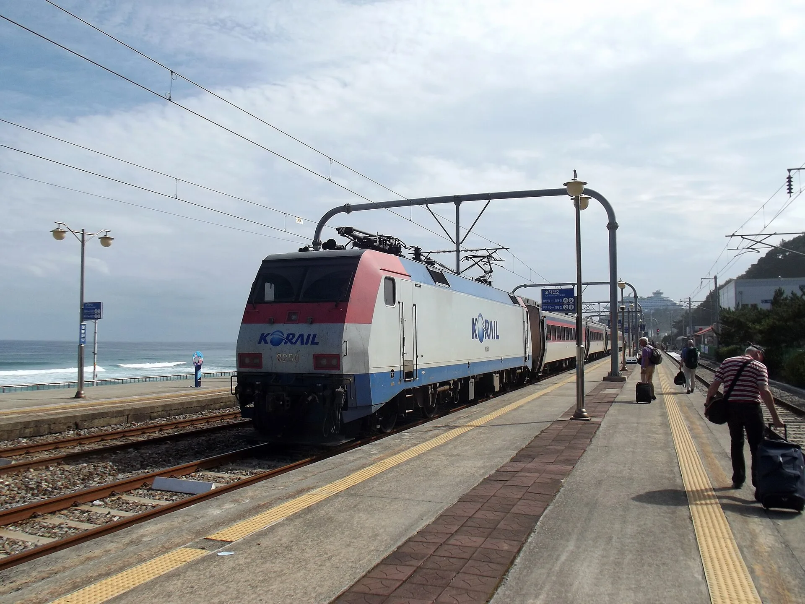
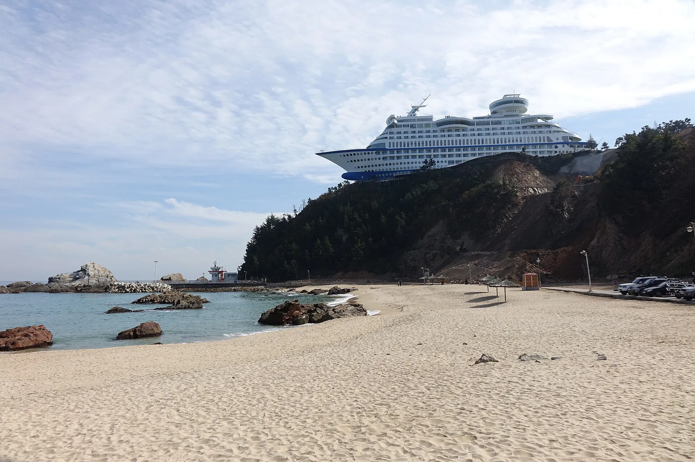
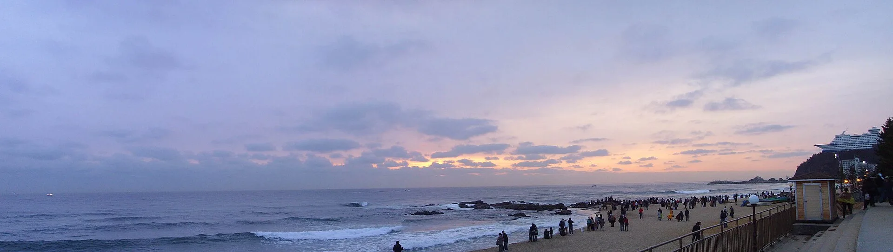
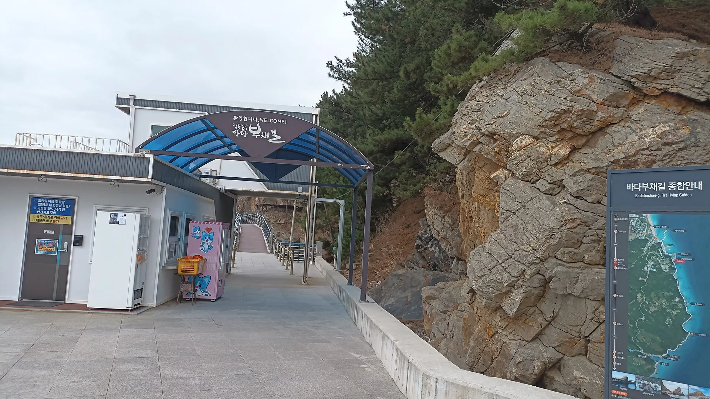
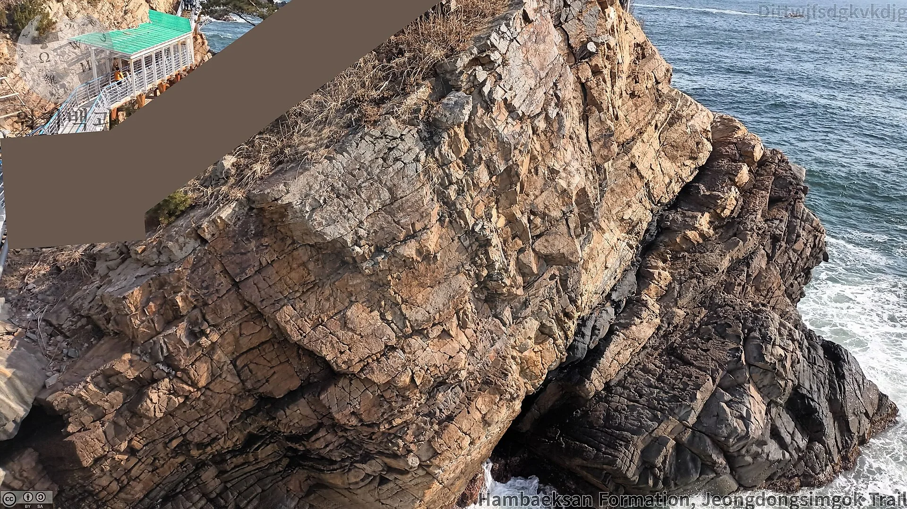

▲ 정동진 해안 절벽 위에 자리한 썬크루즈리조트. 크루즈선을 본떠 지은 배 모양 건물이 정동진의 상징이 됐다
강원 강릉시 강동면 정동진(正東津)은 '세계에서 바다와 가장 가까운 기차역'이라는 타이틀 하나로 전국적인 지명도를 얻었다. 1995년 SBS 드라마 <모래시계>의 촬영지로 알려지면서 해돋이 명소로 떠올랐고, 지금도 새해 첫날이면 전국에서 인파가 몰린다. 다만 정동진역만 보고 발길을 돌리기엔 아쉽다. 역 바로 앞에는 밀레니엄 모래시계가 있는 모래시계공원이, 언덕 위에는 크루즈선을 본떠 지은 썬크루즈리조트가, 그 사이사이엔 레일바이크와 해안 산책로가 자리 잡고 있다. 이 기사는 정동진역 이용법부터 모래시계공원, 썬크루즈리조트, 일출 명소, 레일바이크, 주변 연계 코스까지 방문 순서대로 정리했다.
1. 정동진역 — 기네스에 오른 '바다와 가장 가까운 기차역'

▲ 정동진역 맞이방(대합실) 입구. '일출 최고의 명소'라는 코레일 안내판이 걸려 있다 ⓒ Wikimedia Commons
정동진역은 1962년 11월 6일 여객·화물을 취급하는 간이역으로 문을 열었다. 원래는 비둘기호 정도만 서던 작은 역이었지만, 1995년 드라마 <모래시계>가 이곳에서 촬영되며 관광 수요가 폭발적으로 늘었고 새마을호까지 정차하는 주요 역으로 위상이 바뀌었다. 지금은 기네스 세계기록에 '바다와 가장 가까운 기차역'으로 공식 등재돼 있다. 실제로 플랫폼에 내려서면 몇 걸음 만에 백사장과 파도가 눈앞에 펼쳐진다.

▲ 정동진역 플랫폼. 철로 바로 옆이 백사장과 바다로 이어진다. 멀리 언덕 위로 썬크루즈리조트가 보인다 ⓒ Wikimedia Commons
다만 열차 노선은 예전과 달라졌다. 2020년 강릉삼각선 개통 이후 청량리·동대구·부전·부산 방면 장거리 무궁화호는 동해역까지만 운행하고, 정동진역은 동해~강릉 구간 셔틀열차(누리로 등)와 KTX-이음(강릉선), 2025년 1월부터 운행을 시작한 ITX-마음이 오간다. 동해~강릉 셔틀은 하루 약 27~30편이 다니며, 강릉역 기준 첫차 05:46·막차 19:58로 운행 시간이 촘촘한 편이다. KTX를 이용하면 서울에서 정동진까지 약 2시간이면 닿는다. 다만 열차 시간표는 계절과 사정에 따라 수시로 바뀌므로, 방문 전 코레일 공식 채널에서 최신 시간표를 확인하는 게 안전하다.

▲ 정동진역에 들어서는 열차. 승강장에 내리는 순간부터 바다가 바로 옆이다 ⓒ Wikimedia Commons
| 항목 | 내용 |
|---|---|
| 정차 열차 | KTX-이음(강릉선), ITX-마음(2025.1~), 동해~강릉 셔틀열차(누리로 등) |
| 무궁화호 | 2020년 강릉삼각선 개통 후 장거리 노선은 동해역까지만 운행 |
| 셔틀 운행 | 동해~강릉 구간 하루 약 27~30편, 강릉역 기준 첫차 05:46·막차 19:58 |
| 서울~정동진 | KTX 이용 시 약 2시간 소요 |
| 개업 | 1962년 11월 6일 간이역으로 개업 |
| 특징 | 기네스 세계기록 '바다와 가장 가까운 기차역' |
2. 모래시계공원 — 세계 최대 밀레니엄 모래시계와 시간박물관
정동진역에서 걸어서 10분 거리에는 모래시계공원이 있다. 1999년 강릉시가 새 천년을 기념해 조성한 공원으로, 중심에는 지름 8.06m, 폭 3.20m, 무게 40톤(모래 8톤)에 이르는 세계 최대 규모의 밀레니엄 모래시계가 놓여 있다. 이 모래시계는 위쪽 모래가 아래로 완전히 떨어지는 데 정확히 1년이 걸리도록 설계됐다. 시간을 재는 기계라기보다, 매년 12월 31일 자정 새로운 한 해의 시작과 함께 방향을 돌려 다시 채워지는 상징적인 조형물에 가깝다.
공원 안에는 정동진시간박물관도 함께 있다. 실제 증기기관차와 180m 길이의 기차 모양 전시관으로 꾸며져 있고, 시간의 탄생부터 아인슈타인의 시간 개념, 중세 시간 예술, 현대 작가가 해석한 시간까지 '시간(Time)'을 주제로 한 다양한 전시를 볼 수 있다. 2015년에는 '한국관광100선'에도 이름을 올렸다. 정동진역-모래시계공원-해변이 모두 도보 10분 안팎 거리에 모여 있어, 기차로 온 뚜벅이 여행자가 가장 먼저 들르기 좋은 코스다.
3. 썬크루즈리조트 — 산 위에 떠 있는 배 모양 호텔

▲ 해변에서 올려다본 썬크루즈리조트. 절벽 꼭대기에 실제 크루즈선처럼 뱃머리와 갑판을 재현했다 ⓒ Wikimedia Commons
정동진 백사장에서 고개를 들면 절벽 위에 거대한 흰색 크루즈선이 얹혀 있는 듯한 광경이 눈에 들어온다. 썬크루즈리조트다. 실제 배가 아니라 호텔·콘도 건물을 크루즈선 모양으로 설계해 지은 것으로, 뱃머리와 갑판, 조타실 형태의 전망대까지 재현해 정동진의 랜드마크가 됐다. 호텔·콘도 외에도 정원과 조각 작품이 놓인 조각공원, 유리 바닥으로 바다 위를 내려다보는 전망대 구간을 갖추고 있어 투숙객이 아니어도 둘러볼 수 있다.
1시간에 한 바퀴씩 도는 회전식 스카이라운지·전망대는 별도 티켓이 아니라 테마공원(해돋이공원+조각공원) 입장권 안에 포함돼 있다. 요금은 대인(일반) 5,000원, 어린이·경로자·장애인·국가유공자 3,000원이며 단체는 각각 4,000원·2,000원으로 할인된다. 호텔·콘도 투숙객은 무료로 이용할 수 있다. 이용 시간은 비수기엔 일출 30분 전부터 일몰까지, 주말·성수기엔 04:30~21:00로 안내되지만 기상 상황에 따라 바뀔 수 있어 방문 전 공식 홈페이지나 전화로 다시 확인하는 게 좋다.
| 구분 | 개인 | 단체 |
|---|---|---|
| 대인(일반) | 5,000원 | 4,000원 |
| 어린이·경로자·장애인·국가유공자 | 3,000원 | 2,000원 |
| 호텔·콘도 투숙객 | 무료 | |
| 이용 시간 | 비수기 일출 30분 전~일몰 / 주말·성수기 04:30~21:00 | |
| 위치 | 강원 강릉시 강동면 정동진리 50-10 | |
| 문의 | 033-610-7000 | |
4. 일출 명소와 시간 — 새해 첫날 인파가 몰리는 이유

▲ 일출을 보려고 정동진 해변에 모인 인파. 매년 12월 31일 자정을 넘기면 해맞이 인원이 절정에 이른다 ⓒ Wikimedia Commons
정동진이 해돋이 명소로 자리 잡은 데는 이유가 있다. 기차에서 내리면 곧바로 백사장이 이어지는 지형 덕분에, 이동 없이 바로 수평선 위로 떠오르는 해를 볼 수 있다. 일출 시각은 계절에 따라 크게 달라지는데, 여름에는 오전 5시 30분 전후, 겨울에는 오전 7시 30분 전후로 알려져 있다. 기상 상황에 따라 매일 조금씩 바뀌므로, 일출을 목표로 방문한다면 출발 전 기상청이나 코레일 안내로 정확한 시각을 확인하는 게 좋다. 정동진역 승강장, 모래시계공원 앞 백사장, 썬크루즈리조트 전망대가 모두 대표적인 일출 관람 포인트로 꼽힌다.
5. 정동진 레일바이크 — 폐선 구간을 달리는 바다 전망 코스
모래시계공원 인근에는 정동진 레일바이크가 있다. 실제 철로 위를 페달을 밟아 달리는 체험형 시설로, 동해를 옆에 끼고 달리는 구간이 있어 가족 단위 방문객에게 인기가 많다. 2인승과 4인승으로 나뉘며, 요금은 2인승 28,000원, 4인승 38,000원이다. 운영은 사전 예약제로, 공식 홈페이지의 실시간 예약 메뉴를 이용하거나 탑승 시간 전 매표소에서 발권한 뒤 안내에 따라 탑승장으로 이동하면 된다.
| 항목 | 내용 |
|---|---|
| 2인승 요금 | 28,000원 |
| 4인승 요금 | 38,000원 |
| 예약 방법 | 공식 홈페이지 실시간 예약 또는 현장 매표소 발권 |
| 위치 | 강원 강릉시 강동면 정동역길 17 |
| 문의 | 033-655-7786(09:00~17:00) |
6. 주변 연계 코스 — 정동심곡 바다부채길·강릉 시내

▲ 정동심곡 바다부채길 정동 매표소 입구. 데크 산책로를 따라 걸으면 해안 절벽과 동해가 바로 이어진다 ⓒ Wikimedia Commons
정동진에서 남쪽으로 조금만 이동하면 정동심곡 바다부채길이 나온다. 해안 절벽을 따라 데크 산책로가 조성돼 있어, 파도가 부딪히는 기암절벽과 탁 트인 동해를 가까이서 볼 수 있는 코스다. 정동(정동진)과 심곡 두 곳에 매표소가 있고, 총 3.01km 구간을 잇는다. 정동진역-모래시계공원-썬크루즈리조트를 오전 코스로 묶고, 오후에는 바다부채길을 걸은 뒤 강릉 시내(경포호·중앙시장 등)로 이동하는 일정이 무난하다. 자가용이 없어도 정동진역을 기점으로 도보와 버스만으로 하루 코스를 소화할 수 있다는 점이 정동진 여행의 강점이다.

▲ 바다부채길 데크에서 내려다본 해안 절벽. 파도에 깎인 기암 지형과 탁 트인 동해가 어우러진다 ⓒ Wikimedia Commons
✅ 강릉 정동진, 가기 전 체크리스트
· 정동진역은 1962년 개업, 기네스 세계기록 '바다와 가장 가까운 기차역'
· 2020년 강릉삼각선 개통 후 장거리 무궁화호는 동해역까지만 운행, 현재는 KTX-이음·ITX-마음·동해~강릉 셔틀열차 이용
· 모래시계공원의 밀레니엄 모래시계는 지름 8.06m·무게 40톤, 모래가 1년에 걸쳐 떨어지도록 설계
· 썬크루즈리조트 전망대는 테마공원 입장권에 포함(대인 5,000원·어린이 등 3,000원), 투숙객은 무료
· 일출 시각은 여름 5시 30분·겨울 7시 30분 전후로 계절에 따라 편차가 큼
· 정동진 레일바이크는 2인승 28,000원·4인승 38,000원, 사전 예약 권장
· 정동심곡 바다부채길·강릉 시내와 묶어 하루 코스로 다니기 좋음